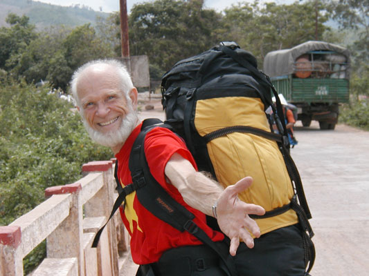
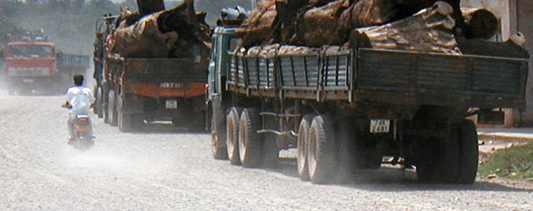
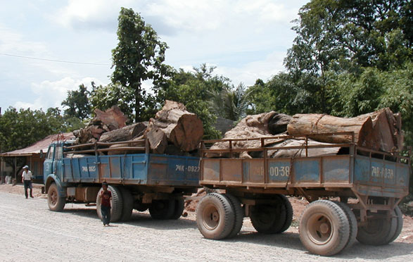
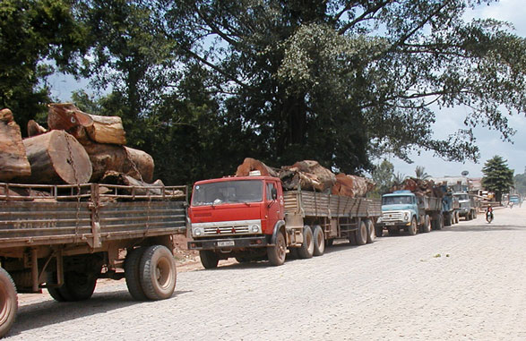
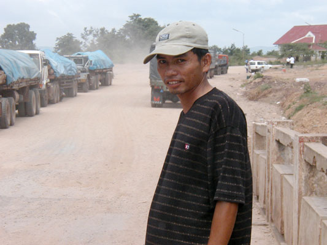

Laos Trav-E-Logs©
| Road 2 Savannakhet sent 18 June 2003 |
 |
| back: Sa Pa | With a smile like that, do you think I’m enjoying this trip? |
================================= Here’s an episode about being flexible when travelling overseas. Started 18- hour journey to Vientiane, arrived 3 days later. Here’s how it started .... =================================
June 10-12, 2003
Bought ticket for deluxe, A/C international bus direct from Ha Noi, Viet Nam, to Vientiane, Laos so I would not have to put up with local busses that are dirty, break down often, and do not run on any particular schedule because they stop at many little villages and search for passengers. Besides, the traveler must carry his luggage about 3 KM at the Cau Treo border crossing into Laos unless riding in the International bus. This trip is over the spectacular Kaew Neua Pass, with lots of views to please the eyes, when not studying the inside of the eyelids while resting in the reclining bus seats. Ms Giang from the Thu Giang Hotel tells me to be ready by 7 PM, though the pickup will probably be at 7:15. Checking out is a little more complex than normal, because the bill is paid in a combination of dollars and dong, as dong can not be converted once you leave Viet Nam. I’m carrying fruit and just enough dong to buy a drink somewhere. She also advises me that if the bus is not full, they sometimes make a transfer to smaller bus at the border. My understanding is that often the bus gets to the border at 3 AM, and so you just sleep in the bus until the crossing opens at 7 AM. My Visa expires on the 12th, so I’m leaving with one day to spare “just in case”.
At 7:45 a motorbike shows up and takes me to a street corner just a few blocks away. At 8:30, a small bus (~28 passenger) shows up, and we are all told to get on. I ask if the bus goes to Vientiane, Laos, and the driver does not understand. A couple seated immediately behind the driver tells me they are, and that one other passenger on the bus asked the same question. It’s dark, and I can’t see whom it is talking to me. I feel better, though everyone else is on open tour to southern areas of Viet Nam.
The bus continues to pick up passengers, about 75% westerners, until 7 or 8 are standing in the isle. I have my fingers crossed we will be meeting big busses on the outskirts of Ha Noi, the reverse of my arrival 9 days earlier. About 9:15 The bus parks on a side street, and I recognize the rendezvous location. I make my way off the bus, even though no one is told what we are doing here. I ask the driver if we all get off, and he understands, replying “yes, wait for big bus.” I relay the message to everyone waiting on board. Close to 10:30 PM, a big bus is brought over from the parking lot next door, and we are all told to get on. When the driver tells me “4 to Laos“, I know I’m not on the wrong bus. We are not allowed to sit in the front seat, nor across the full back row on the bus. Reserved for drivers. Even a Vietnamese parent must hold a three year old child on his lap while the relief driver reclines across the five seats in back, and the “conductor” shares my favorite front seat with a lady friend of the driver. The bus gets underway shortly before 11 PM – almost 4 hours from the start time and I’m still in Ha Noi.
 I’ve checked out the maps, and know we must leave National Highway 1 at the town of Vinh. That should be 4 - 5 hours down the highway. The driver keeps taking long rest stops. 45 minutes long, and not the 20 minute stops of other drivers. When we get to the town I think is Vinh, he makes a short turn off the highway, looks out the window, turns the bus around in the middle of a block, and continues on down the highway. He refuses to talk to me.
While talking to the other passengers going to Laos, we start planning strategy. They are also out of dong, the Viet Nam currency. I’m guessing that the bus was so late, we missed our connecting bus to Cau Treo. If this bus takes us all the way to Hue, Viet Nam, we will not be able to cross the border today. Maybe we can connect with the International bus from Da Nang in Dong Ha, which is the closest approach to Lao Bao, the most popular border crossing into Laos from Viet Nam. Two more stops and many hours later, we stop for breakfast in the town of Dong Ha. After 20 minutes, a local tourist agent comes up to us and says he will take us to Savannakhet, Laos in his minibus. Our bus driver has arranged it. Claims no bus to Cau Treo today. The other three insist on going to Vientiane. He refunds each of us $3, “for another bus from Savannakhet to Vientiane”. (Actually $4 by local bus, $7.50 by the deluxe service we had paid for.) I place a couple conditions on the trip, to which he agrees: Direct to Savannakhet, we pay nothing additional, no change in buses at the border, no more passengers in the minibus! I insist he tell the driver. We say our good-byes to the folks on the Big bus, and pile into the minibus. First stop, a bus terminal. After a few minutes, the driver gets back in and we start again. He picks up another man, who piles in front. I’m worried. We travel a little further, and he stops to pick up someone by the side of the road. I lock all the doors in back. She piles in front with the other two, but he gets the idea. No more stops when other people try to flag him down! At least I’ll get one of my conditions met. Now we go straight to the border, only stopping once to let the lady passenger out.
The road from Dong Ha, Viet Nam, to the border post at Lao Bao runs just south of the DMZ. I’m actually surprised that vegetation seems to be recovering nicely – it’s only been 28 years since the USA last bombed, Agent Oranged, and Napalmed the area. Many crops are grown in the area, and I wonder how high the incidence of cancer and birth defects are. I really didn’t want to cross here, as the other border post is much more scenic. I’m not going to be able to send e-mail from Savannakhet. Many are the thoughts that race through my mind as the minibus climbs the winding road through the countryside.
 The other man in the minibus, it turns out, performed tour guide duties such as paying for motorcycle transfer at the border, showing us where to go, and paying for our local public bus to take us from the border at Lao Bao to Savannakhet. I get a good picture of him crossing the border with us, and he snaps a picture of me. It’s 10:30 AM. We’re getting screwed, but this guy is more like the messenger. Besides, it would be pretty boring if everything went according to plans.
After passing the border formalities, we walk down the dirt road passing dozens of trucks loaded with Lao’s ancient forest awaiting border clearance into Viet Nam. A bus arrives from the Lao direction, and makes a U-turn. Our guide passes money to the driver, and we know this will be our new home for the next seven hours.
The local bus in Laos is a new experience for me. Windows are open, but it is very dusty and hot. Everything, floors, seats, windows, and walls is covered in red clay, and soon we and our packs conform. Down the center isle are steel reinforcing poles supporting the roof to prevent collapse when tons are strapped on top. Welcome to the real world. It’s hot, dusty, and we pray for rain to help control the huge clouds of dust poring in the windows each time we pass a vehicle going in the opposite direction. This first part of the trip crosses the Ho Chi Minh trail at Xepon, Laos, but I see little evidence from the bus window. Further down the dirt road, the bus starts crossing back and forth across a heavily graded roadway, and it is clear the Lao Government is preparing a blacktop roadway to the border. Finally, with only 50 KM left to Savannakhet, we reach the blacktop surface. Less than an hour to go, and we are very tired, very hungry, and very dirty.
Enjoy!
Bill
------------------------------
Email me at the juno.com address "dancer2SEAsia"
"Travel is Fatal to Bigotry, Prejudice, and Narrow-minded ness" .... attributed to Mark Twain
| next: Savannakhet 2 Wat Phu |
| back: Sa Pa |